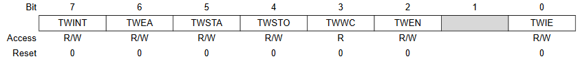

It always amazes me when I see I2C functions used without any testing of return values.
Most I2C functions return a status code, which can be used to identify problems.
When I2C slave devices are returning values to the master they expect to receive a ACK/NAK from the master to let them know the master is or is not expecting any more data from them so they can release the bus back to the master. Usually the last byte expected by the master needs a NAK to be sent in order for the master to issue a bus STOP condition, without this NAK the slave holds onto the bus waiting for the master to request more data.
Read the data sheet and see if this is not true.
Then rewrite your code to look at and test returned status codes.
У TWI один вектор прерывания. При этом есть регистр TWSR, в котором записывается код причины перехода в прерывание.
Коды состояний для режима Master:
0x00 Bus Fail - аппаратная ошибка шины. Например, внезапный старт посреди передачи бита.
0x08 Start - Был сделан старт. Теперь мы решаем что делать дальше, например послать адрес ведомого.
0x10 ReStart - Был обнаружен повторный старт. Можно переключиться с записи на чтение или наоборот. Зависит от логики.
0x18 SLA+W+ACK - Мы отправили адрес с битом записи, а в ответ получили ACK от ведомого. Значит, можно продолжать.
0x20 SLA+W+NACK - Мы отправили адрес с битом записи, а нам послали NACK. Обидно, сгенерим ошибку или повторим еще раз.
0x28 Byte+ACK - Мы послали байт и получили подтверждение, что ведомый его принял. Продолжаем.
0x30 Byte+NACK - Мы послали байт, но подтверждение не получили. Видимо, ведомый уже захлебнулся в передаваемых данных, либо еще что-то.
0x38 Collision - Другой мастер нас перебил.
0x40 SLA+R+ACK - Послали адрес с битом на чтение, а ведомый отозвался. Можно читать.
0x48 SLA+R+NACK - На запрос к адресу ХХХ с битом чтения никто не откликнулся. Устройство ХХХ отсутствует или занято.
0x50 Receive Byte - Мы приняли байт. И решаем что ответить ведомому: ACK или NACK.
0x58 Receive Byte+NACK - Мы приняли байт от ведомого и сказали ему «NACK» с цеолью освободить шину.
Коды состояний для режима Slave:
0x60 Receive SLA+W - Пришел запрос по имени на запись…
0x68 Receive SLA+W LP - Будучи мастером, вели обмен данными с ведомыми. Появляется на шине другой мастер, перебивает нашу отправку данных и закидывает нам пакеты. Придется переключаться в Slave и принимать данные.
0x70 Receive SLA+W Broadcast - Получен широковещательный запрос. Реакция зависит от логики программы.
0x78 Receive SLA+W LP Broadcast - Получен широковещательный запрос от мастера.
0x80 Receive Byte
&&
0x90 Receive Byte Broadcast - Принимаем байты. От кого и в каком виде - неважно. Решаем что сказать "ACK" или "NACK". Тут уже по обстоятельствам.
0x88 Receive Last Byte
&&
0x98 Receive Last Byte Broadcast - Приняли последний байт.
0xA0 Receive ReStart - Повторный старт.
0xA8 Receive SLA+R - Пришел запрос по имени на передачу данных.
0xB0 Receive SLA+R LP - Во время передачи данных приходит запрос от мастера на другую отправку (не совсем ясно).
0xB8 Send Byte Receive ACK - Получаем ACK после нашей отправки данных. Отправляем последний пакет и говорим «NACK» или же у нас еще много данных и продолжаем передачу.
0xC0 Send Last Byte Receive NACK - Отправили мастеру последний имеющийся байт и получили «NACK». Требуется освободить шину.
0xC8 Send Last Byte Receive ACK - Отправили мастеру последний имеющийся байт, а он требует еще. Но у нас больше нет данных, так что уходим с шины (в этот момент мастер начнет получать якобы от slave 0xFF байты, на самом деле это просто чтение висящей шины).
Из каждого состояния можно выйти по фиксированному для каждого состояния пути. Как и куда выходить зависит от того, что нам нужно сделать и какие данные послать.
Путь определяется битами регистра TWCR и управляется он только вручную!

Bit 7 - TWINT: TWI Interrupt Flag
Бит устанавливается, когда TWI заканчивает текущую работу и ожидает отклика программы. Если I-bit в SREG и TWIE в TWCR установлены, то контроллер уйдет в прерывание.
Флаг нужно сбрасывать вручную, чтобы в очередной раз разрешить прерывание.
Note that this flag is not automatically cleared by hardware when executing the interrupt routine.
Also note that clearing this flag starts the operation of the TWI, so all accesses to the TWI Address Register (TWAR), TWI Status Register (TWSR), and TWI Data Register (TWDR) must be complete before clearing this flag.
Bit 6 - TWEA: TWI Enable Acknowledge
Если его установить, то автомат TWI будет отзываться на свой адрес, а также давать ACK во всех случаях когда этого требует протокол. Скажем, после прием байта. Если нам надо послать NACK то бит не ставим.
Bit 5 - TWSTA: TWI Start Condition
Сформировать старт. Причем не факт, что прямо сейчас. Зависит от текущего состояния. Например, если этот бит поставить в 0х38 состоянии, то старт будет сформирован когда шина освободится.
Bit 4 - TWSTO: TWI Stop Condition
Сформировать Stop. После записи в этот бит модуль отваливается от сессии передачи. МК становится неадресованным ведомым.
Bit 3 - TWWC: TWI Write Collision Flag
Конфликт записи. Сигнализирует о том, что кто то из прикладной программы записал в TWDR данные, тогда как в TWDR полагается писать только при поднятом TWINT.
Устанавливается при попытки записи в адресный буфер, когда флаг TWINT ещё не установился. Данный бит сбросится, когда TWINT будет равен 1.
Bit 2 - TWEN: TWI Enable
Включение/отключение работы TWI.
Bit 0 - TWIE: TWI Interrupt Enable
Включает прерывания.
Простой пример — оптправка данных в EEPROM. По правилам шины i2c она должна выглядеть так:
|
Master |
Start |
SLA+W |
Byte |
Byte |
Stop | |||
|
Slave |
ACK |
ACK |
ACK |
Start
В прикладной программе инициируем обмен по шине. Для этого надо установить в TWCR биты:
0x08
Далее, как только блок TWI выдаст на шине Start, мы окажемся в прерывании TWI с кодом 0х08, после чего смотрим что надо делать дальше. А дальше нам надо отправить SLA+W.
SLA+W мы записываем в TWDR и даем приказ заслать это в шину, поставив биты TWEN, TWIE, TWINT. Остальные не нужны, т.к. это не старт, не стоп, и, для простоты, ведомым мы не являемся в принципе, а значит нам ACK никому слать не надо. Запуливаем эту комбинацию в TWCR и выходим из прерывания.
0x18
Спустя какое то время, когда блок TWI выдаст адрес на шину, мы вновь окажемся в прерывании. Но уже с кодом 0х18 (или 0х20 если нам никто не ответил). Теперь надо решать что дальше делать. Надо послать байт данных. Отправляем данные в TWDR из условленного места. И снова проворачиваем механизм, выставив флаги TWEN, TWIE и TWINT.
Блок TWI начнет отправлять данные по шине. Как закончит опять сгенерит прерывание, но уже с кодом 0х28.
0х28
Мы послали байт и попали сюда. Код 0х28 (или код 0х20 если ведомый послал NACK). Теперь надо решать что делать дальше. У нас там по плану еще один байт послать. Заносим его в TWDR и шлем (TWEN, TWIE и TWINT).
0х28
Опять в прерывании, опять с кодом 0х28. Байты закончились. Больше ничего слать не надо. Значит пошлем СТОП и прекратим обмен. Не проблема (TWEN, TWIE, TWINT и, главное, TWSTO). Теперь где нибудь выставим флажок или пошлем событие о том, что передача успешно завершена, а затем, с чистой совестью, выйдем из прерывания в фоновую программу.
Оптимальным решением является делать switch - case по кодам, которые нам необходимо обрабатывать.